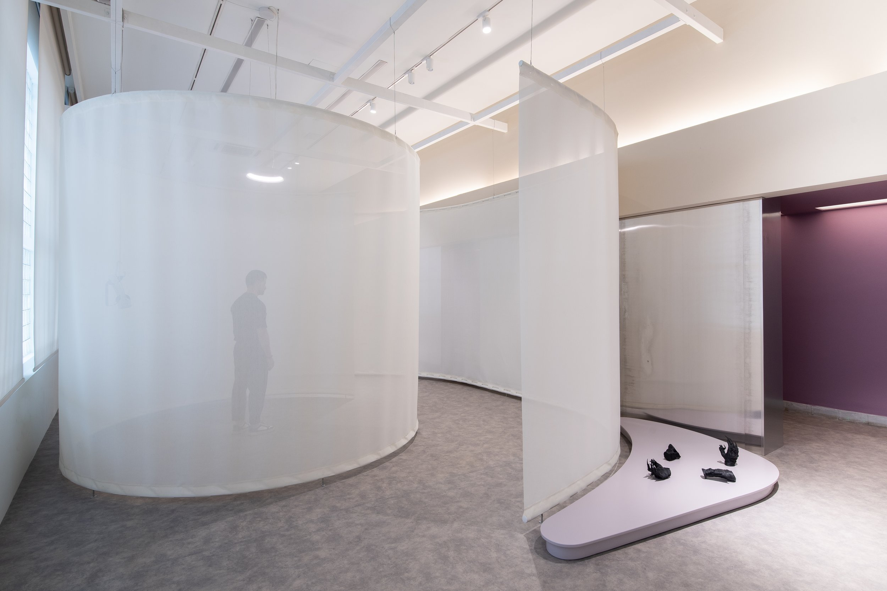
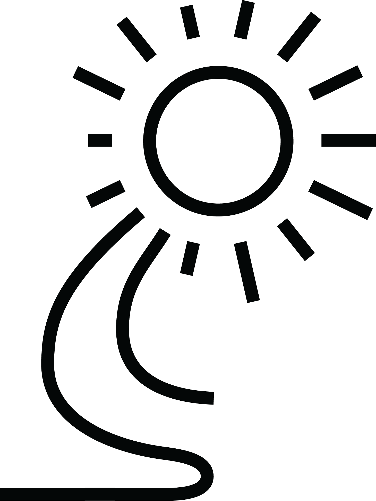
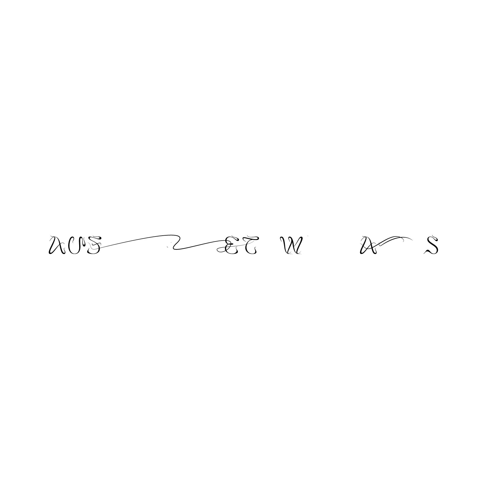
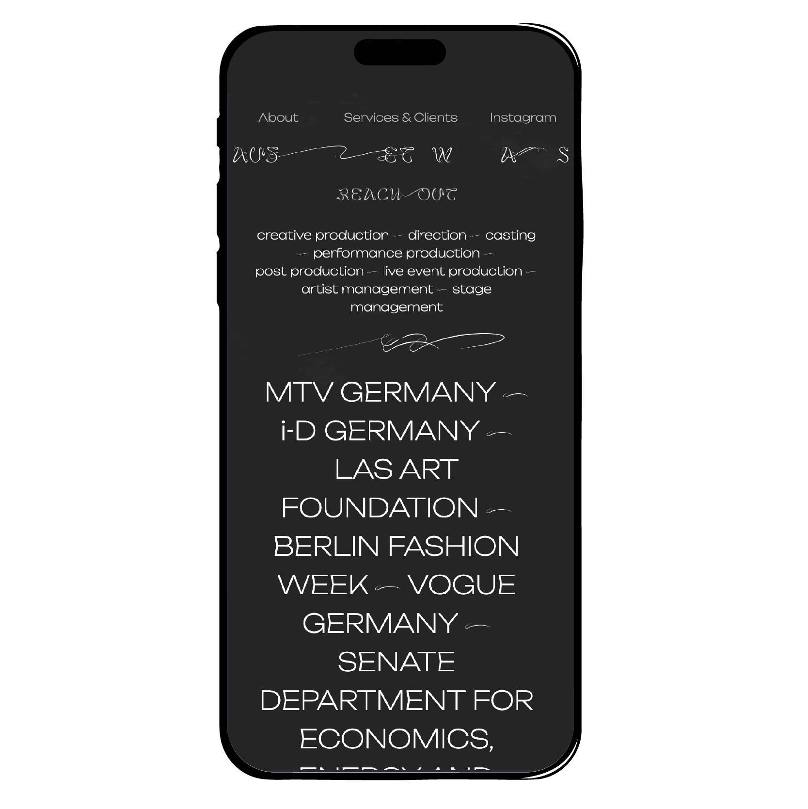
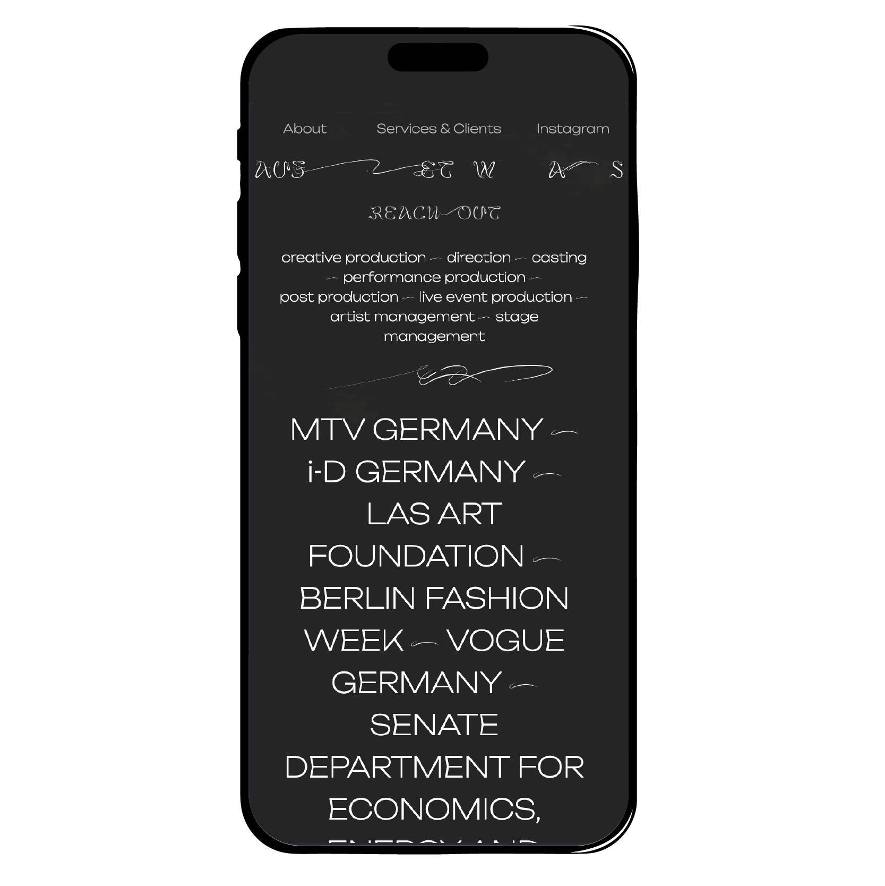

Cover Letter
Dear Ákos Zeleny,
I’m thrilled to apply for the Multimedia Designer position at morfi. With nearly a decade of experience as a freelancer, I bring a unique combination of adaptability, creativity, and a proven track record in graphic design, animation, and illustration.
As a classically trained illustrator with expertise in Adobe Creative Cloud and Blender, I’ve built a diverse portfolio that spans graphic design, motion graphics, and animation. I’ve created multimedia assets for various platforms, curated art exhibitions, and developed explainer-style animations. My ability to storyboard complex ideas and translate them into engaging visuals aligns seamlessly with your needs for eLearning development.
Freelancing for the past 10 years has honed my resilience, time management, and ability to learn new tools quickly. Recently, I’ve delved into AI technologies, reflecting my commitment to staying at the forefront of creative trends. I’m excited to bring this adaptability to your team, where I can create innovative content, learn Articulate Storyline 360, and contribute to building engaging learning experiences.
I’d welcome the opportunity to bring my creative expertise and passion for design to morfi. Thank you for considering my application. I look forward to the chance to discuss how I can contribute.
Best regards,
Nikos Stephou
Selected Portfolio Content
Fluent in
Adobe Photoshop
Adobe Illustrator
Adobe InDesign
Adobe After Effects
Blender
Davinci Resolve
Ableton Live
HTML/CSS
Figma
1 - Visual Identity
Cyprus Museum
WE MET – LOVE, DEATH AND META
WE MET – LOVE, DEATH AND META
Branding
Posters
Exhibition Graphics
Typography
Publication Design
Posters
Exhibition Graphics
Typography
Publication Design
For the Cyprus Museum's groundbreaking art installation WE MET – LOVE, DEATH AND META, I worked on creating a cohesive visual identity that captures the profound and immersive nature of the exhibit. By designing posters, exhibition graphics, banners, and publications, I ensured that every element resonated with the themes of love, decay, and rebirth within a hybrid virtual and physical universe. The typography and branding were crafted to seamlessly blend contemporary aesthetics with the timeless allure of the antiquities on display.
My creative approach was inspired by the exhibit's central themes and the artistic language of Michalis Charalambous. Drawing on his masterful techniques, I transformed concepts like clay as skin and the transition from physical to digital into visual elements that evoke emotional depth. Each graphic, color, and texture invites the audience to embark on a reflective journey through the meta-realm, exploring the complexities of human experience in a rapidly shifting reality.
My creative approach was inspired by the exhibit's central themes and the artistic language of Michalis Charalambous. Drawing on his masterful techniques, I transformed concepts like clay as skin and the transition from physical to digital into visual elements that evoke emotional depth. Each graphic, color, and texture invites the audience to embark on a reflective journey through the meta-realm, exploring the complexities of human experience in a rapidly shifting reality.

Floricienta Iuvenalis
Branding
Packaging Design
Advertising Posterss
3D Renders
Packaging Design
Advertising Posterss
3D Renders
Floricienta Iuvenalis, under the leadership of Chrysa Gregoriou, is a beacon of Cyprus’s aromatic heritage. Collaborating closely with this visionary entrepreneur, I contributed to shaping the brand’s unique and captivating image, ensuring it resonated with the mystery and allure that defines the Floricienta identity. Together, we created a visual narrative that reflects the rich history and tradition of Cypriot perfumery, weaving modern aesthetics with a timeless sense of elegance.
My work included designing labels for over 50 products, crafting cohesive branding, and creating packaging that embodies the brand's sophisticated essence. Additionally, I developed advertising posters that communicate the enchanting story of Floricienta Iuvenalis to a broader audience. This collaborative effort resulted in a brand presentation as compelling and unforgettable as the fragrances themselves.
My work included designing labels for over 50 products, crafting cohesive branding, and creating packaging that embodies the brand's sophisticated essence. Additionally, I developed advertising posters that communicate the enchanting story of Floricienta Iuvenalis to a broader audience. This collaborative effort resulted in a brand presentation as compelling and unforgettable as the fragrances themselves.
Broken Pitcher Movie & Exhibitions
Visual Identity
Posters
Communication Materials
Movie Titles
Posters
Communication Materials
Movie Titles
For The Broken Pitcher, a compelling project that explores the impact of foreclosure in Cyprus, I created a visual identity that encapsulated the emotional and social significance of the narrative. By designing posters, publications, and various communication materials, I ensured the visual representation aligned with the project's critical examination of debt, colonial history, and its impact on individuals. The branding reflected the intensity and complexity of the subject matter, making it accessible and thought-provoking to diverse audiences.
Drawing on the project's deep exploration of personal and societal perspectives, my design approach was rooted in conveying both the personal tragedy and broader socio-political implications of the foreclosure crisis. The visual identity, with its stark and evocative elements, served as a bridge between the filmed reenactment and the broader cultural discourse, inviting reflection on the lasting consequences of Cyprus' economic history.
Drawing on the project's deep exploration of personal and societal perspectives, my design approach was rooted in conveying both the personal tragedy and broader socio-political implications of the foreclosure crisis. The visual identity, with its stark and evocative elements, served as a bridge between the filmed reenactment and the broader cultural discourse, inviting reflection on the lasting consequences of Cyprus' economic history.
SpineSun
by Jacob Jonas
by Jacob Jonas
Logo Design
Visual Research
Visual Research
Jacob Jonas, the visionary behind Jacob Jonas The Company, is celebrated for his collaborations with major names like TED, The Wall Street Journal, and The Getty Museum. Known for his groundbreaking work at the intersection of dance, art, and community engagement, Jacob’s latest venture, SpineSun, required branding that captured his innovative spirit and forward-thinking ethos.
For SpineSun, I conducted extensive visual research to align with Jacob’s distinct aesthetic. The resulting logo reflects both the dynamism and sophistication of the brand, embodying his vision with a modern yet timeless design. Every detail was meticulously crafted to ensure the branding stands as a true representation of his artistry and the Sunspine identity.
For SpineSun, I conducted extensive visual research to align with Jacob’s distinct aesthetic. The resulting logo reflects both the dynamism and sophistication of the brand, embodying his vision with a modern yet timeless design. Every detail was meticulously crafted to ensure the branding stands as a true representation of his artistry and the Sunspine identity.



2 - Animation / Motion Graphics
Origins
by Markos Kay
by Markos Kay
After Effects
Animation Composition
Animation Composition
Markos Kay, a trailblazing digital artist known for blending science and art, directed Origins, an awe-inspiring animation projection showcased at Kunstkraftwerk Leipzig.
For Origins, I animated the intricate creatures designed by Martin Salfity, bringing their forms and movements to life. Under Markos's direction, I ensured every animation captured the depth and vitality essential to the project's narrative. My work contributed to creating a seamless and immersive experience, aligning with the artistic vision of Origins.
For Origins, I animated the intricate creatures designed by Martin Salfity, bringing their forms and movements to life. Under Markos's direction, I ensured every animation captured the depth and vitality essential to the project's narrative. My work contributed to creating a seamless and immersive experience, aligning with the artistic vision of Origins.
Honest Electronics
Animation
Social Media Design
Event Graphics
Social Media Design
Event Graphics
Honest Electronics is a vibrant collective and independent record label based in Cyprus, dedicated to promoting electronic music and fostering a collaborative community among local artists. They embrace a "Do—It—Together" ethos, activating the local music scene by organizing events and supporting musicians. Known for their diverse electronic music releases, Honest Electronics continues to play a key role in shaping the Cypriot electronic music landscape.
As a multimedia designer for Honest Electronics, I was responsible for crafting visual content for press coverage, events, and social media. My work included designing dynamic graphics, animations, and multimedia elements that captured the essence of their brand and resonated with their community. Additionally, I contributed to the overall visual identity of the label, helping to amplify their presence in the digital space.
As a multimedia designer for Honest Electronics, I was responsible for crafting visual content for press coverage, events, and social media. My work included designing dynamic graphics, animations, and multimedia elements that captured the essence of their brand and resonated with their community. Additionally, I contributed to the overall visual identity of the label, helping to amplify their presence in the digital space.
3 - 3D Works
Biomolecules
for American Heart Assosiation
for American Heart Assosiation
3D Modelling
3D Rendering
Infographics
Nutrition Science
3D Rendering
Infographics
Nutrition Science
The Periodic Table of Food Initiative (PTFI) is an innovative project by the American Heart Assosiation that visually organizes the nutritional components of food in a periodic table format. This initiative aims to help people understand the science behind what they eat and promote better nutrition for healthier lifestyles.
For PTFI, I developed 3D scientific illustrations of key biomolecules such as lipids, proteins, carbohydrates, and minerals found in various foods. These detailed visuals were integrated into their interactive periodic table, making complex nutritional science accessible and engaging for the public. Key words: interactive design, nutrition science, 3D illustrations.
For PTFI, I developed 3D scientific illustrations of key biomolecules such as lipids, proteins, carbohydrates, and minerals found in various foods. These detailed visuals were integrated into their interactive periodic table, making complex nutritional science accessible and engaging for the public. Key words: interactive design, nutrition science, 3D illustrations.


4 - UX/UI - Web Dev
Auf Etwas
Branding, Website Design, Web Development
WHAT I DID: Auf Etwas is a Berlin-based creative studio focusing on digital art and culture...
Website Link

 

The River Speaks
Branding, Website Design, Web Development
WHAT I DID: Auf Etwas is a Berlin-based creative studio focusing on digital art and culture...